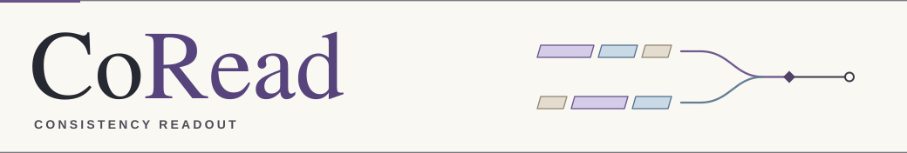
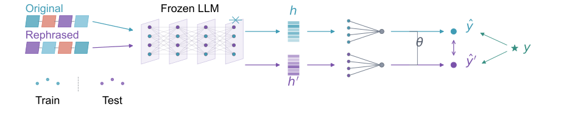
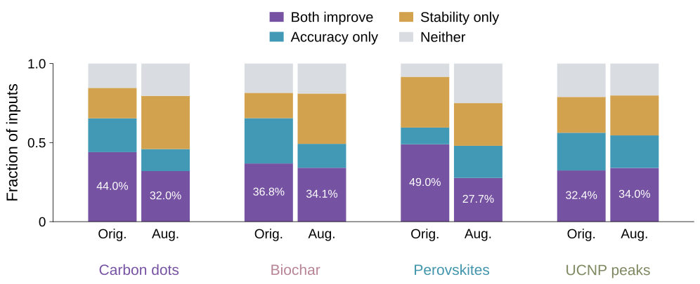
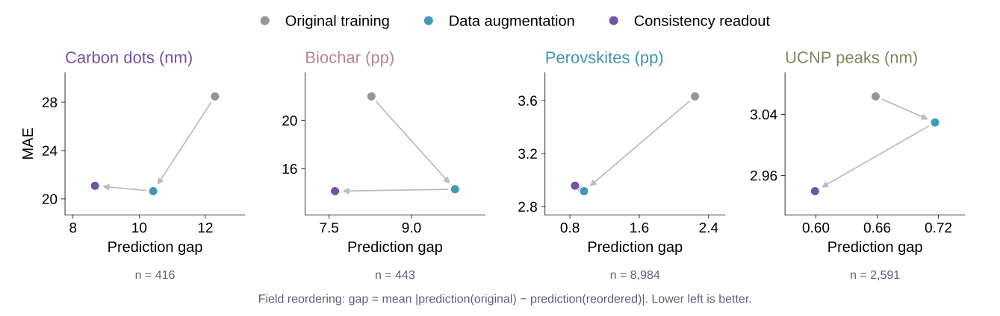

Predict material properties from experimental descriptions 从实验描述预测材料性质
Given a carbon-dot synthesis protocol, predict its room-temperature phosphorescence peak. CoRead extracts representations from a frozen language model and fits a readout to measured labels, constraining how far predictions can shift across equivalent descriptions.
输入碳点的合成条件，预测其室温磷光发射峰位。CoRead 从冻结语言模型中提取表征，用实测标签训练读出器，并约束同一实验换一种写法时的预测差异。
Less sensitivity to field order. Across four regression tasks, the mean gap between predictions before and after reordering was 10.8–22.3% smaller than with ordinary data augmentation.
字段重排后，预测更稳定。在四个回归任务中，相比普通数据增广，重排前后的平均预测差降低了 10.8%–22.3%。
How the readout works读出原理

Quickstart快速开始
Start with carbon_dot. Run the following commands from the repository root with Python 3.10+. Skip the download if Qwen weights are already local.
以 carbon_dot 为例。在仓库根目录使用 Python 3.10+ 运行以下命令。已有本地 Qwen 权重时可跳过下载。
git clone https://github.com/yanghongwei-cn/CoRead.git
cd CoRead
python -m pip install ".[extract]"
hf download Qwen/Qwen2.5-7B-Instruct --local-dir models/pretrained/Qwen2.5-7B-Instruct
python run.py extract --data data/carbon_dot --model models/pretrained/Qwen2.5-7B-Instruct
python run.py demo --datasets carbon_dotFind the measured and predicted values for each sample in results/run_<timestamp>/carbon_dot/predictions.csv. Extraction uses CUDA by default; the readout can then train on CPU.
运行后，在 results/run_<timestamp>/carbon_dot/predictions.csv 查看每条样本的实测值和预测值。特征提取默认使用 CUDA；之后的读出训练可在 CPU 上完成。
Other datasets其他数据集
Extract features once for each dataset by changing --data, then run:
修改 --data 路径，对每个数据集各提取一次特征，然后运行：
python run.py demo --datasets carbon_dot biochar perovskite
python run.py demo --datasets ucnp_peaks
python run.py demo --datasets ucnp_detectionResults实验结果
How often does the same input gain both accuracy and stability? Purple marks a strictly lower absolute error and a smaller prediction gap under field reordering. Each pair compares CoRead with original training (Orig.) and ordinary data augmentation (Aug.).
同一条输入能否同时更准、更稳？紫色表示在字段重排下，绝对误差严格更低且预测差更小。每一对比较 CoRead 与原文训练（Orig.）和普通数据增广（Aug.）。


Datasets数据集
| Dataset数据集 | Samples样本数 | Prediction target预测目标 |
|---|---|---|
carbon_dot | 418 | Room-temperature phosphorescence peak (nm)室温磷光发射峰位（nm） |
biochar | 443 | Soil cadmium immobilization ratio (%)土壤镉固定率（%） |
perovskite | 8,984 | Solar-cell power conversion efficiency (%)太阳能电池光电转换效率（%） |
ucnp_peaks | 2,639 | Peak wavelengths in seven emission bands (nm)七个发射波段的峰位（nm） |
ucnp_detection | 10,807 | Presence in seven bands; 9,913 training / 894 validation七个波段是否检出；9,913 条训练、894 条验证 |
Sources and licences. Carbon-dot and biochar records come from the authors' earlier studies, perovskite records from The Perovskite Database Project, and UCNP records from open-access articles in Europe PMC and publisher repositories; the UCNP prompts quote the experimental descriptions of these articles. The CC BY 4.0 data licence covers the labels, splits, rewrites and paraphrases created for this work; quoted article text remains under the licence of the original article.
来源与许可。碳点和生物炭数据来自作者此前的研究，钙钛矿数据来自 The Perovskite Database Project，UCNP 数据来自 Europe PMC 和出版商文献库中的开放获取文章；UCNP 提示引用了这些文章中的实验描述。CC BY 4.0 数据许可适用于本工作生成的标签、数据划分、改写和释义；引自原文的文本仍受原文章许可约束。
Train, save and predict训练、保存与预测
python run.py train --data data/carbon_dot --model models/readout/carbon_dot.npz
python run.py extract --data data/new_samples --model models/pretrained/Qwen2.5-7B-Instruct
python run.py predict --model models/readout/carbon_dot.npz --features data/new_samples --output results/predictions.csvFor new samples, create data/new_samples/prompts.jsonl.gz; each record needs a unique sample_id and either text or a formatted rendered_prompt. Training and prediction must use the same model, layer, input template and preprocessing.
预测新样本时，先建立 data/new_samples/prompts.jsonl.gz；每条记录需要唯一的 sample_id，以及 text 或已格式化的 rendered_prompt。训练与预测必须使用相同的模型、层、输入模板和预处理。
Python API
from consistency_readout import ConsistencyRidge, load_model
model = ConsistencyRidge().fit(X_train, y_train, available)
model.save("models/readout/carbon_dot.npz")
predictions = load_model("models/readout/carbon_dot.npz").predict(X_new)UCNP adapters are ConsistencyPeaks and ConsistencyDetection; load_model restores the saved type, and predict_proba gives detection probabilities.
UCNP 对应 ConsistencyPeaks 和 ConsistencyDetection；load_model 自动恢复保存的类型，predict_proba 给出检出概率。